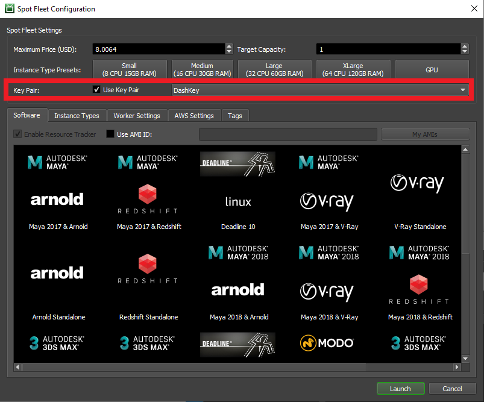

Note
While AWS Portal can enable cloud rendering in Deadline 10, AWS Deadline Cloud is a newer offering that has been built specifically for the cloud. It is a fully managed service that does not require installation or maintenance of infrastructure (e.g., repository, database, or license server). Worker fleet auto-scaling, asset synching, and licensing are all managed natively within AWS by Deadline Cloud. See here for more information on Deadline Cloud and its capabilities.
Connecting to the AWS Portal Worker Instances¶
If you would like to connect to your AWS Portal Worker instances for troubleshooting purposes use the following steps depending on what operating system you are connecting from and the operating system of the AWS Portal Worker Instance.
Every Operating System¶
Your AWS Portal Worker must have an SSH keypair associated with to be able to access it. You can select which keypair to associate with your Spot Fleet when you start it. When starting a Spot Fleet Request ensure that you have selected Use Key Pair. From the adjacent drop down menu you can choose any key pair that’s in your AWS account in the same region as the Spot Fleet Request. We recommend using the DashKey as you don’t have to do anything to set the DashKey up. The following instructions will assume you are using the DashKey.
Connecting to an AWS Portal Worker with Session Manager¶
Follow these instructions to use Session Manager to connect to an AWS Portal Worker
Connecting to a Linux AWS Portal Worker¶
Follow these instructions if connecting to a Linux AWS Portal Worker
Connecting to a Windows AWS Portal Worker¶
Follow these instructions if connecting to a Windows AWS Portal Worker